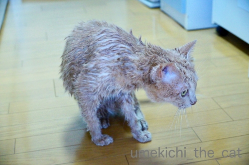
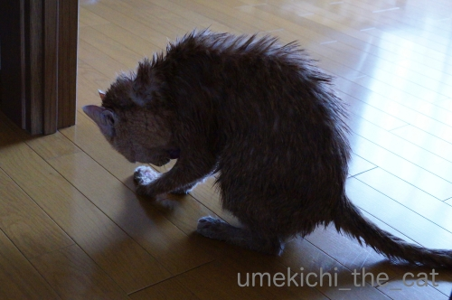
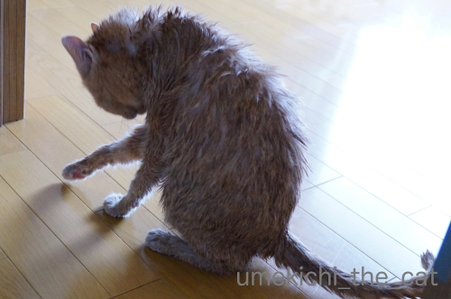
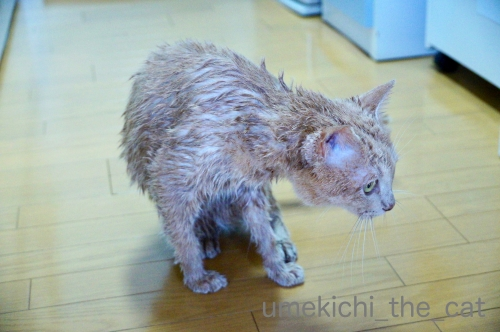
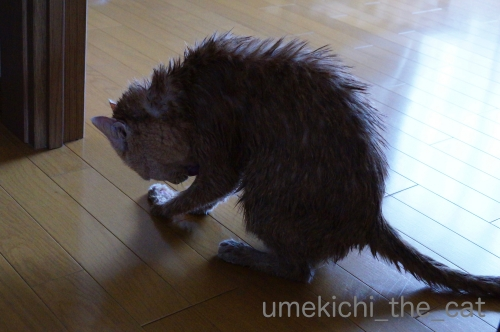
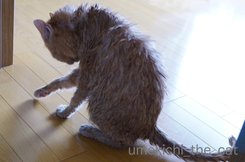

２年ぶりのシャンプー [梅吉]
お盆休みに2年ぶりに梅吉をシャンプーしました。
梅吉の名誉のために書いておきますがブラシはほぼ毎晩。
真夏の時期を除いては毎日私と一緒にお風呂に入って
蒸しタオルで全身を拭いているので清潔ではあるのですよ＾＾

洗い場に連れてこられても平常心。

![[猫]](https://blog.ss-blog.jp/_images_e/101.gif) このあわあわは なんやー
このあわあわは なんやー

シャワーをかけると慌て始めましたけど。
シャンプーは好きじゃない様ですが鳴き叫んだりせず静かにしてるんですよ。
（7秒です＾＾）
二人で手分けして洗ってすすいでその間４〜５分？
こういう事は手早く済ますに限ります。

濡れ鼠の梅吉さんw

不思議な生き物のシルエット(*>艸<)

この貧弱なおしっぽのシルエットが大好です0(≧▽≦)0
シャンプー後はとにかく挙動不審で落ち着かなげにウロウロ＆濡れた体をペロペロ。
時々私の顔を見てわーわー。なにか文句言ってます？
ドライヤーは一箇所にじっとしていないのでNGです。
梅吉のシャンプーは（去年はしなかったけど）一年に一度。
シャンプーが終わると夏の大仕事が終わったなって思うのでした。
 ↑ガブッと一押し↑
↑ガブッと一押し↑
お休み中にニャンダフル 浮世絵ねこの世界展に行ってきました。
看板横で仁王立ちしているのは私です(⌒-⌒;
「２」のつく日は入り口で愛猫の写真を見せると気持ち程度の割引が。
窓口のスタッフの方はちらりとしか見ないだろうけれど
「どの写真にしようか？」と本気で悩みましたよ(*>艸<)
私は「ほあんかんさん」おっとは「すいか帽子」の梅吉。（すいか帽子は後日アップしますwww）
特別展、展示数はそれほど多くはありませんでしたが国芳はたくさんありました。
国芳の描くねこって梅吉に重なるんですよねー。
「似てますよね」ってコメントいただいたことも。
国芳っぽいのってどんなの？って？？
こんなのとか
こんなのとか
こんな感じかしら。
いわゆるかわいらしい猫ではなくて躍動感あふれる妖猫っぽい感じ！！
妖怪猫顔、得意ですから(*>艸<)
常設展の方ではざっと大阪の歴史を紹介していました。
大阪城近くの会場だったので外国人観光客の方も多かったですよ。
上の写真は昔の船場（せんば）のジオラマ。

屋根にスズメがいたり作りが細いです。
ジオラマの中に猫が数匹いて「見つけられますか？」という遊びもあったのですが
ここに時間を取られていては国芳に集中できない！と早々に切り上げました。
久しぶりの国芳、満足でしたー＾＾
国芳の画像をググってたらこんなのを発見！
国芳のねこステッカー。
（ステッカーはiMessageで使うスタンプです。）
iMessage、使用頻度は低いのですがおもわず買っちゃいました。
梅吉の名誉のために書いておきますがブラシはほぼ毎晩。
真夏の時期を除いては毎日私と一緒にお風呂に入って
蒸しタオルで全身を拭いているので清潔ではあるのですよ＾＾
洗い場に連れてこられても平常心。
シャワーをかけると慌て始めましたけど。
シャンプーは好きじゃない様ですが鳴き叫んだりせず静かにしてるんですよ。
（7秒です＾＾）
二人で手分けして洗ってすすいでその間４〜５分？
こういう事は手早く済ますに限ります。

濡れ鼠の梅吉さんw

不思議な生き物のシルエット(*>艸<)

この貧弱なおしっぽのシルエットが大好です0(≧▽≦)0
シャンプー後はとにかく挙動不審で落ち着かなげにウロウロ＆濡れた体をペロペロ。
時々私の顔を見てわーわー。なにか文句言ってます？
ドライヤーは一箇所にじっとしていないのでNGです。
梅吉のシャンプーは（去年はしなかったけど）一年に一度。
シャンプーが終わると夏の大仕事が終わったなって思うのでした。
お休み中にニャンダフル 浮世絵ねこの世界展に行ってきました。
看板横で仁王立ちしているのは私です(⌒-⌒;
「２」のつく日は入り口で愛猫の写真を見せると気持ち程度の割引が。
窓口のスタッフの方はちらりとしか見ないだろうけれど
「どの写真にしようか？」と本気で悩みましたよ(*>艸<)
私は「ほあんかんさん」おっとは「すいか帽子」の梅吉。（すいか帽子は後日アップしますwww）
特別展、展示数はそれほど多くはありませんでしたが国芳はたくさんありました。
国芳の描くねこって梅吉に重なるんですよねー。
「似てますよね」ってコメントいただいたことも。
国芳っぽいのってどんなの？って？？
こんなのとか
こんなのとか
こんな感じかしら。
いわゆるかわいらしい猫ではなくて躍動感あふれる妖猫っぽい感じ！！
妖怪猫顔、得意ですから(*>艸<)
常設展の方ではざっと大阪の歴史を紹介していました。
大阪城近くの会場だったので外国人観光客の方も多かったですよ。
上の写真は昔の船場（せんば）のジオラマ。
屋根にスズメがいたり作りが細いです。
ジオラマの中に猫が数匹いて「見つけられますか？」という遊びもあったのですが
ここに時間を取られていては国芳に集中できない！と早々に切り上げました。
久しぶりの国芳、満足でしたー＾＾
国芳の画像をググってたらこんなのを発見！
国芳のねこステッカー。
（ステッカーはiMessageで使うスタンプです。）
iMessage、使用頻度は低いのですがおもわず買っちゃいました。

カフェオレ色の梅吉

梅吉 2023年8月10日 永眠


梅吉と出会った譲渡会

犬猫の理由なき殺処分ゼロ
妄想広告
UMEKICHI 光

爆発的に早い！
時々攻撃的！
Thanks to Mr.Boss365
爆発的に早い！
時々攻撃的！
Thanks to Mr.Boss365

シャワー平気なんだニャ、偉いね。
シャンプーしてもらって綺麗になって良かったニャ。
by 英ちゃん (2019-08-15 00:15)
梅吉さん濡れたら別の猫みたい。
国芳猫さんとはお顔の雰囲気が似てると思うんですよ。
by zombiekong (2019-08-15 00:26)
濡れ鼠の梅吉さん♪
とても新鮮です(#^.^#)
シャワー怖がらずに良い子です！
Ｌｅａは台の上にいないと
逃げ回ります(;^_^A
って梅吉さんを台に乗せても
ヒョイッと降りてしまいますね（笑
by きぃ (2019-08-15 06:34)
梅吉さんは由緒正しい日本の猫かも？＾＾
by ぽちの輔 (2019-08-15 06:38)
お利口さんにシャンプーされていますね(^^)
ワンちゃんは 最後ブルブルをしますがネコちゃんもするのかなー？
あの勢いがハンパありませんでした(思い出)
サッパリ スッキリ 梅ちゃんですね
by チャー (2019-08-15 09:08)
梅吉さんはシャワーかけられてもおとなしいのですね！
濡れ鼠になっちゃいましたね(^^)
by ma2ma2 (2019-08-15 09:15)
梅吉さん、いい子♪ 実家のミイちゃんは大暴れするのでシャンプーも決死の覚悟らしいですよー。毎日おんもに行ってごろんごろんしちゃう子なので、本当はもっと綺麗にしないと〜なのですが。
ま、もともとニャンコは綺麗好きでお手入れしているからいっかぁ(^^;;
濡れ鼠になった後ろ姿、なんとも哀愁がただよってますな。
浮世絵猫、おもしろそうです。
昨年、江戸ねこ茶屋って期間限定猫カフェに行ったのですが、浮世絵の街にリアル猫様方がいっぱいいて面白かったです。
by ChatBleu (2019-08-15 10:06)
シャワーかけても鳴かないでいい子にしてますね♪えらいぞ梅吉さん(^^
うちの熟女らは鳴き叫びます。大暴れです。到底無傷ではいられませぬ。
シャンプー後のやせ細った姿も意外といいですよね(笑
浮世絵猫の世界展いいですね。ジオラマとか好きです。
そういわれてみれば国芳猫はどことなく梅吉さんの香りが漂ってますね(笑
妖怪顔は季節柄大事です！
by marimo (2019-08-15 10:44)
シャワー、かけられても動かず、大物ですね〜。
毎日蒸しタオルで綺麗に拭いてもらってるから、お風呂が怖くないのかな。
シャンプーは、皮膚が活性化するせいか、洗ってる時も、乾いてからも、
ものすごく毛が抜けますよね。
そういう意味でも、シャンプーは覚悟がいるので、最近サボり気味です。
梅吉さん、国芳っぽいと言われてるんですか？なんか納得^^;。
ジオラマ、よくできてますね。
by nachic (2019-08-15 11:26)
梅吉さん、ものすっごいイイ子ですね(#^^#)
ハリネズミのようにツンツン尖った毛がまた可愛らしい！
我が家は阿鼻叫喚の地獄絵図になるので、2年に1回と定めました^^;
私の手首もまだダメなのもあり、この夏は無しです！
ウチのは濡れタオルも嫌いににつきブラッシングとコロコロのみ。
オチリのみ追いかけ回して拭いてます。
「浮世絵猫展」私も行きました♪
はい！意地にななってジオラマの猫8匹を見つけようとヘトヘト。
老眼にはかなり厳しい猫探しでした(≧▽≦)
国芳の猫文字を見ると梅吉さんを思い出します^^
by ゆきち (2019-08-15 12:52)
梅吉さん、いい子ですね。
動画で大暴れしているニャンさん良く観ますが、梅吉さんは大人対応（笑）
小さな犯行が可愛いです。
台風は、曇天で雨もまだですが、今夜は大変そうですね。
気をつけましょうね。
『浮世絵猫展』行こうねと言いかながら、
引越しの騒動に巻き込まれています。
すぐそこなので行きます。
京都で見た猫展と同じようなものかと思ってます。
by kiki (2019-08-15 13:58)
梅吉さん、シャワーでもおとなしくしてるなんて、なんていい子なんでしょう！
うちは初代の猫は親が年に一度洗っていましたが、阿鼻叫喚の騒ぎ。
他も虐待しているのかという喚き方なので、やらなくなりましたよ。
私がよく拭いたりブラッシングしたりしてやってはいました。
みゅんの場合、毎日２時間は自分でなめているのでいつもきれいだったし。
国芳の絵、そういえば似てる！
顔立ちも体つきも～表情豊かで、筋肉の動きがわかるようなスレンダーなボディ、国芳さんに見せたいわあ＾＾
by sana (2019-08-15 16:00)
梅吉さん大人しくシャワーしてますね、すごい！
うちの猫はブラッシングやたまに拭くだけでしたが、最初に飼った猫は痩せていた野良だったので、初日にシャワーしました。30年ほど前の事ですが、暴れて大変だった記憶があります。懐かしい・・・。
ところで、浮世絵猫さんと梅吉さんは雰囲気が似てますね(^^)
by お名前（必須） (2019-08-15 17:47)
↑ログイン忘れてましたm(_ _)m
by kou (2019-08-15 17:49)
さすが「漢 梅吉さん」シャンプーごときでは騒がないんですねぇ♪( ´▽｀)
あぁ、うちのニャンズにその心意気を教えていただければ
毎回虐待を疑われるような騒ぎにならずに精神的に疲れずに済むのに(*_*)
あっ、大御所は静かに怒ってタオルに包んで私に一瞬抱っこされた瞬間に
私の腕に噛みつきます(ｰ ｰ;)→シャンプーしてるのはかみさんなのに( T_T)
by ニッキー (2019-08-15 18:10)
梅吉さん、シャワーをかけられても大人しいですね。
ウチの猫はこの暑い時期、風呂場の床でペタンと涼を取っていることがありますが、私が入るどころか、風呂場の外で目が合っただけで一目散に逃げます。^^;
by yes_hama (2019-08-15 19:56)
短毛種の猫さんでも
濡れるとかなり小さく見えますね
梅吉君、シャワーも平気なんだ！
by 藤並 香衣 (2019-08-15 23:19)
こんにちは。
２年ぶりのシャンプー？クチャい？一瞬驚きました（笑）
小生猫も年２回程度かな？
梅吉君、暴れていない感じで静かで素直ですね。良い子です！！
小生猫だと鳴き叫び？暴れます。虐待している感じで可哀想になってしまします。
２人体制で手早くは小生宅と同じですが・・・
シルエット撮影は流石です。小生撮影している時間・暇はない感じです（笑）
ドライヤーOKも有難い感じですね。小生猫だと絶対無理です（涙）
夏休み中なのか？猫イベント多いですね。
「国芳のねこステッカー」拡大してみましたが・・・
なんか？ブログネタヒントになりそうです（笑）！？(=^･ｪ･^=)
by Boss365 (2019-08-15 23:51)
猫って水浸しになるとこんな姿になるんですね。
まさに未確認生物(笑)
ちょっと拗ねているように見えるのは私だけでしょうか。
by yamatonosuke (2019-08-16 00:59)
基本、ニャンは洗わなくてもいいと言いますからね。
うちも1年以上シャンプーしていませんが、毛は
つるつるピカピカなので、ま、いっかと(笑)
本猫が熱心に毛づくろいしていますしね＾＾
うちも梅ちゃんと同じくシャンプーはへっちゃら。
１人でも十分洗えます(￣∀￣*)ｲﾋｯ
昔飼っていたコは『殺されるぅぅぅ』とばかりに
泣き叫ぶので大変でしたがｗｗ
浮世絵猫展、私も行く予定です。でも『2』のつく日は
無理かも＾＾どの写真を見せようかで悩むちぃさんステキ★
国芳師匠の浮世絵猫大好きです(≧∀≦)
by カトリーヌ (2019-08-16 10:39)
ぁぁ、ミルクホールのコンビーフが缶のままと言うのは、缶の開け方が分かるかな？って書いてあったらしいんだよね（ﾟ□ﾟ）
もちろん私等の年代は分かるよねw
しかし、コンビーフも久し振りに食べましたw
by 英ちゃん (2019-08-16 15:44)
梅吉くんシャンプーおつかれさまでした。
大丈夫だよ〜
梅吉くんが普段から艶々なのは知ってるから♪
だっておばちゃんは触っているしー。へっへっへｗｗ
乾いたらますます艶々のいい男になったに違いないわ。
大阪歴史博物館も楽しそうなところ。
商人の街ってのを実感できる感じかしらー？
by リュカ (2019-08-16 16:13)
おっ、梅吉さん、シャンプー余裕ぢゃないですか(^.^)
濡れネズミの姿は、たしかに別の生物だわww
･･･しかし･･･ウチは、1度もシャンプーしたことはありません!!!
国芳さんのお宅に梅吉さんが居たら、絶好のモデルでしたにゃ♪
by のらん (2019-08-17 08:33)
後ろ姿がカワウソさん？みえました^^
梅吉さんスッキリしてよかったね。
by ニコニコファイト (2019-08-17 09:49)
よい子に洗われるんですね。漢・梅吉くん。
濡れ鼠な姿も萌え萌えです♡
by liang (2019-08-17 11:45)
参考になったにゃんは、わっしょいにゃんです^^
by ニコニコファイト (2019-08-18 08:33)
シャンプーうらやましい！！(≧▽≦)
by palpal (2019-08-22 09:13)